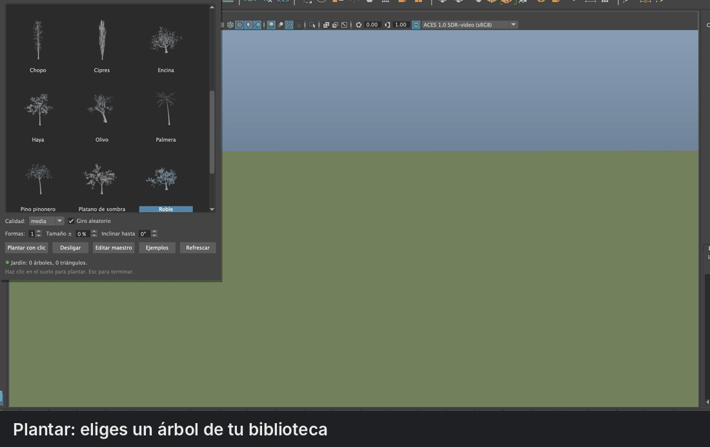
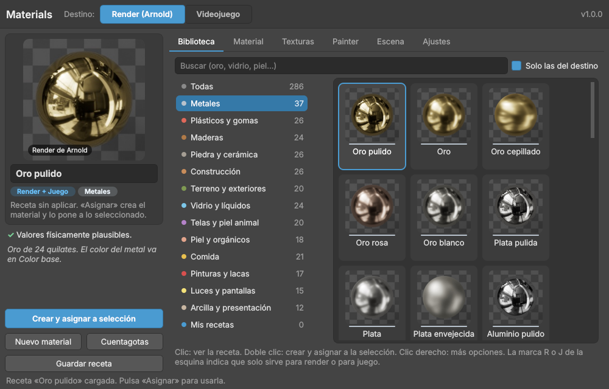

Flujo de trabajo
Este tutorial recorre una escena completa con MantiTools, en el mismo orden que el estante: referencias, entorno, materiales, luz, render, y guardando versiones por el camino. El ejemplo es una ruina cubierta de hiedra en un jardín, pero los pasos valen para cualquier escena de exterior o de producto.

Ten abierta la ventana central (último icono del estante) acoplada a un lado: así tienes a mano todas las herramientas y sus ajustes mientras trabajas.
0. Guardar desde el principio#
Antes de nada, guarda con SimpleSave (clic en su icono). La primera vez te propone un nombre limpio para la escena, sin tildes ni espacios, y crea la versión v001 con una nota y una miniatura.
- Activa el autoguardado en Ajustes → SimpleSave si no lo tienes: cada pocos minutos guarda una copia aparte sin tocar tus versiones.
- A partir de aquí, guarda una versión cada vez que termines un paso de este tutorial, con una nota corta («hiedra creciendo», «luz de tarde»). Más en SimpleSave.
1. Referencias con Muro#

- Clic en el icono de Muro: se abre el tablero de la escena.
- Arrastra al tablero fotos de ruinas, de hiedra y del tipo de luz que buscas. Ordénalas en marcos («forma», «color», «luz»).
- Escribe notas con lo que quieres conseguir: la hora del día, la cámara, la paleta.
- Usa el fantasma para ver una referencia transparente sobre el visor y encajar la cámara o las proporciones.
El tablero se guarda con la escena: cuando vuelvas a abrirla, vuelve a estar. Más en Muro.
2. Construir: árboles#


- Modela o importa el suelo y la ruina.
- Abre Árboles (clic en su icono). Elige una especie de serie o ajusta una a tu gusto con los deslizadores del editor.
- Guárdala en la biblioteca y pulsa Biblioteca para plantar (clic derecho en el estante).
- Planta copias con clic sobre el suelo. Son copias ligadas: si cambias el árbol maestro, cambian todas.
- Vigila el semáforo de triángulos: en verde el visor va fluido.
Más en Árboles.
3. Construir: hiedra#

- Abre Trepadora.
- Paso 1, Superficie: selecciona la ruina y añádela.
- Paso 2, Origen: marca de dónde nace la planta (la base de un muro, por ejemplo).
- Paso 3, Aspecto: elige un preajuste («hiedra de fachada» es un buen principio).
- Crecer y Crecer más hasta que cubra lo que quieres. Con una zona prohibida dejas libres ventanas o puertas; con una curva guía la llevas por donde quieras.
- Crear malla: aparecen las hojas instanciadas.
Más en Trepadora.
4. Construir: hierba#
- Abre GrassEditor y crea una capa sobre el suelo.
- Elige los tipos de hierba y su mezcla; para un jardín cuidado, césped; alrededor de la ruina, hierba silvestre y alguna flor.
- Limita dónde crece: pinta con el pincel, sube la Pendiente máxima para que no trepe por los taludes, y con Añadir selección y Buscar Árboles y Cantera aparta la hierba de la ruina y de los troncos.
- Pulsa Analizar rendimiento si el visor va lento: te dice qué capas pesan más y cómo aligerarlas.
Más en GrassEditor.
Árboles, Trepadora y GrassEditor crean sus materiales como openPBRSurface. Si traes una escena hecha con versiones antiguas, pasa sus materiales con MantiTools → Convertir materiales a OpenPBR. Ver Materiales OpenPBR.
5. Materiales con Materials#


- Abre Materials y elige el destino Render (Arnold).
- Busca en la biblioteca (piedra, madera, metal…) y haz doble clic para crear el material y asignarlo a lo seleccionado.
- Ajusta color y rugosidad en la pestaña Material, o trae texturas propias.
- Para pintar a mano, Enviar a Painter: Materials prepara el archivo, lo abre en Substance 3D Painter y, al exportar, conecta las texturas solas en Maya.
Más en Materials.
6. Luz con LightManager#

- Abre el Panel de luces.
- Para un exterior, usa el modo Escena: un HDRI de cielo y el sol por hora (ciudad, fecha y hora), que pone la dirección, el color y la potencia del sol solos.
- Ajusta la intensidad en pasos (cada paso es el doble de luz) y el color en Kelvin.
- Comprobar la iluminación (clic derecho en el estante) revisa luces demasiado fuertes, muestras altas, luces solas olvidadas…
Para un producto o un personaje, el modo Estudio y Tres puntos en lo seleccionado te dan un esquema clásico en un clic. Más en LightManager.
7. Probar y renderizar con RenderDesk#

- Abre RenderDesk, al lado del visor de Arnold.
- Elige el preset de calidad Borrador mientras ajustas y Probar: el render se actualiza al momento.
- Haz una Instantánea antes de cada cambio importante y compáralas con A/B en el historial.
- Suma extras al preset cuando hagan falta: Hojas y hierba con recorte para el follaje, Vidrio y líquidos si hay ventanas…
- Cuando todo esté bien, Final y lanza el render en segundo plano: puedes seguir usando Maya mientras tanto.
Más en RenderDesk.
8. Entregar#
- Guarda la versión final con SimpleSave y una nota clara.
- Entregar (en el panel de SimpleSave) prepara un .zip con la escena y sus texturas, listo para subir.
- Si algo no funciona antes de entregar, MantiTools → Comprobar instalación → Copiar informe y mándaselo al profesor.
Atajos que ayudan en todo el proceso#
- Radial (doble Tab): un menú bajo el ratón con las órdenes que más usas en cada fase. Con el radial automático cambia solo según el espacio de trabajo de Maya. Ver Radial.
- Clic derecho en el estante: todas las órdenes rápidas sin abrir ventanas. Ver Primeros pasos.